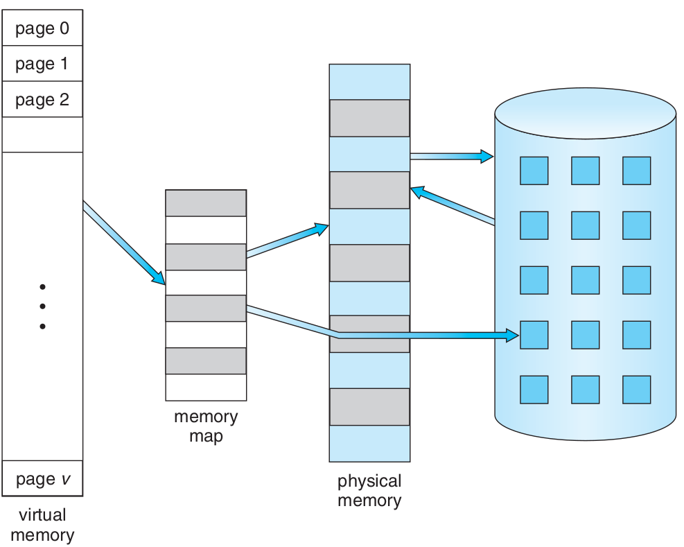
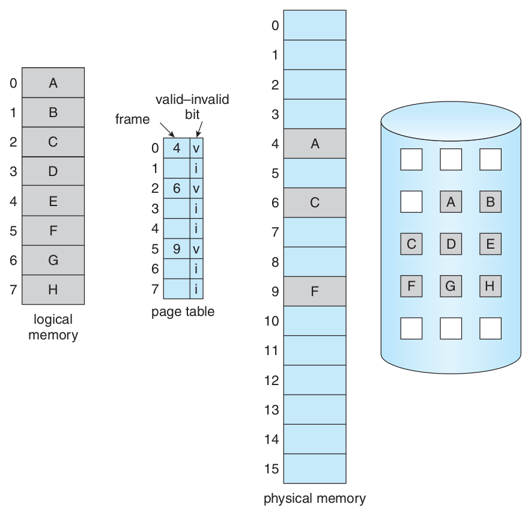
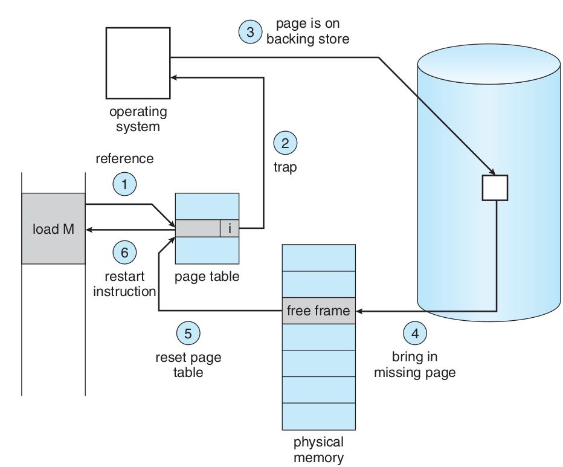
effective access time =
(1 − p) × ma + p × page fault time.
EAT RAM = 200 nanosecond
Page fault time = 8 milliseconds
(1 − p) × (200) + p (8 )
(1 − p) × 200 + p × 8,000,000
200 + 7,999,800 × p
220 > 200 + 7,999,800 × p,
20 > 7,999,800 × p,
p < 0.0000025
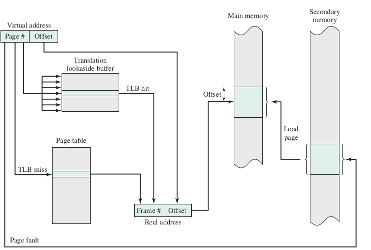
مجموعهٔ مقیم برای هر فرآیند.
تعداد ثابت fixed-allocation
تعداد متغیر variable-allocation
بخش کردن قابها میان فرآیندها
تعداد برابر
تعداد به نسبت اندازهٔ فرآیند
چگونگی برگزیدن یک قاب برای تخصیص به یک فرآیند
تخصیص محلی
تخصیص سراسری
Allocation Policies
On demand
prepaging
demand cleaning
precleaning
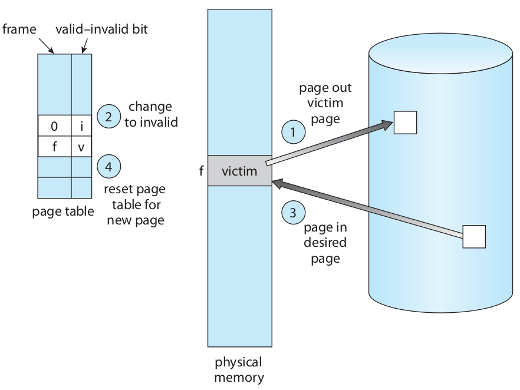
frame allocation algorithm
page replacement algorithm
reference string of pages
1, 4, 1, 6, 1, 6, 1, 6, 1, 6, 1
تعداد خطای نبود صفحه بسته به تعداد قابهای تخصیص داده شده
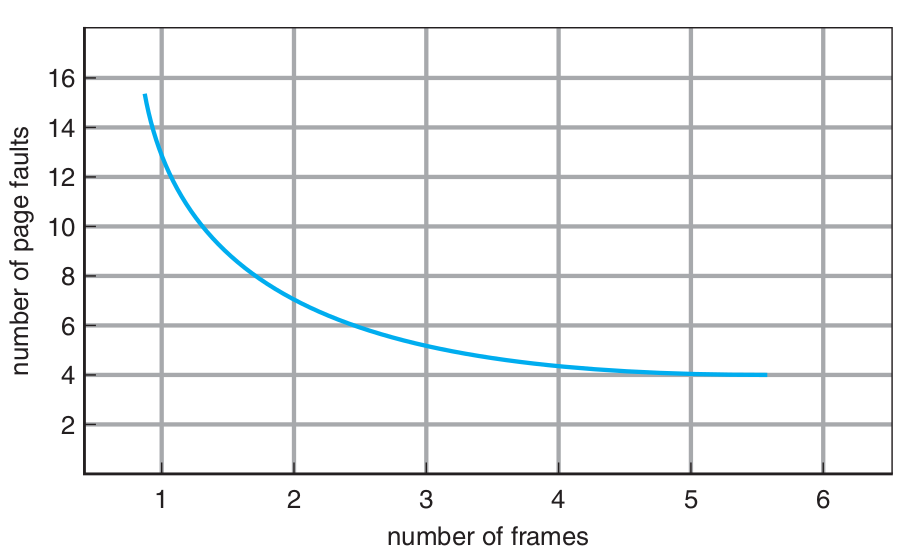
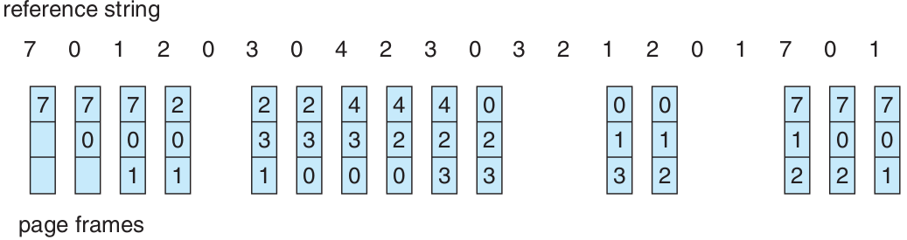
Belady’s anomaly
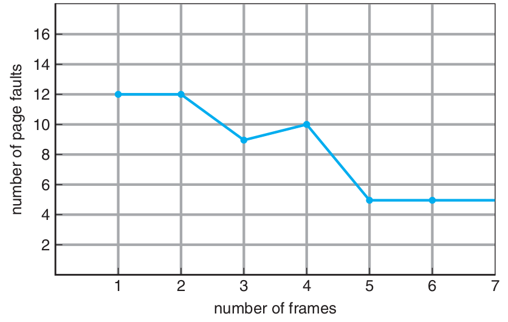
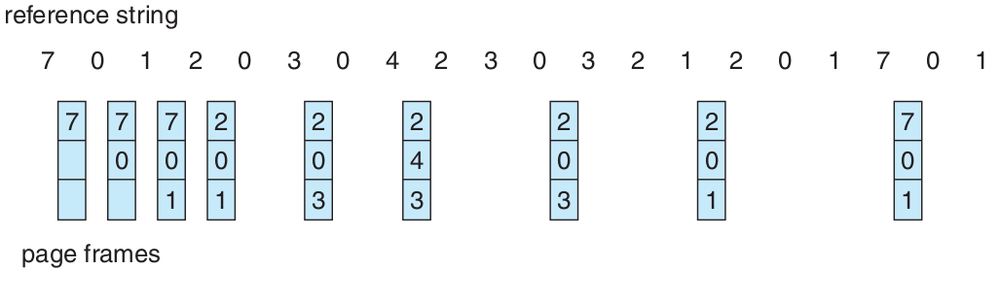
Not Recently Used Page(NRU)
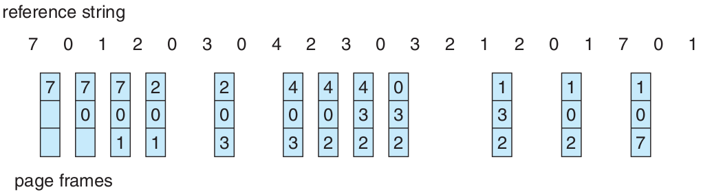
NRU vs LRU
Least Recently Used(LRU)
counters
stacks
LFU
Least Frequently Used
MFU
Most Frequently Used
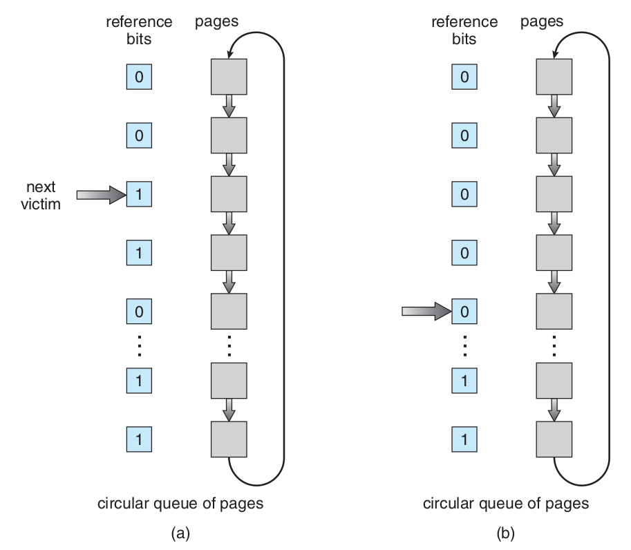
Automatically set to 1 by hardware
when the page is read or written.
Automatically set to 1 by hardware
when the page content is modified.
(Reference Bit, Modify Bit)
(R, M)
R=0, M=0 : not recently used, clean).
R=0, M=1 : require write-back
R=1, M=0 : clear R
R=1, M=1 : R=0, M=1
This algorithm accesses the frame, right?
Doesn't the R bit change to 1 automatically?
Think about it!!
Look at the YIC models and its changes
Read the comments of this slide in its rst file.
However, it is about something else.
Writing dirty page to disk
from VAX/VMS to all modern kernels
list of clean, unallocated frames
list of dirty frames in memory
Written to disk in bulk asynchronously
batch I/O rather than on-demand.
Page Fault in Modified Pool
Soft Page Fault
Can be added to FIFO,Clock, etc.
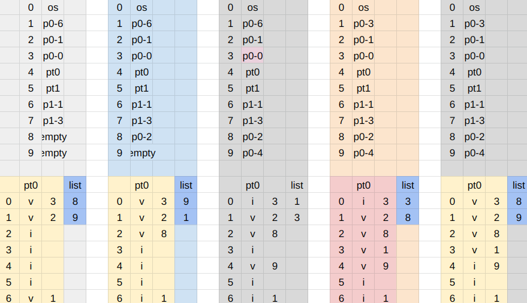
https://docs.google.com/spreadsheets/d/1WtKolLTw4UJijHHwvhO9yqOotsLl91838vSZ00m4xwc/edit?gid=0#gid=0
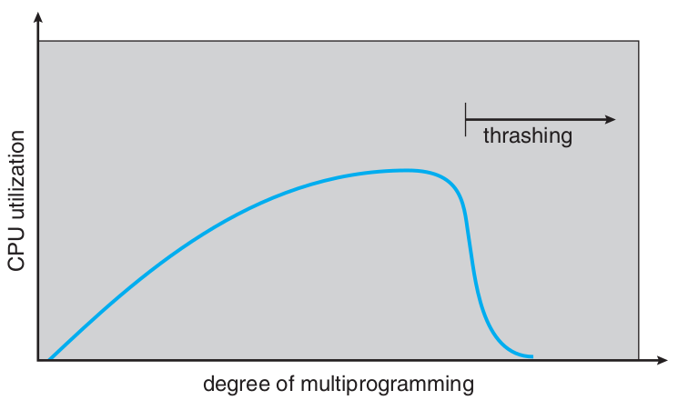
mov A, B
; How many frames does it access?
; What is the maximum?
; What is the minimum?The Principle of Locality
Programs do not access memory completely at random
They cluster around specific addresses.
loop variables
function parameters
variable sum
sequential array traversal
a[i+1] after a[i]
streaming instructions
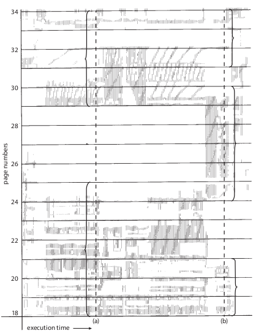
1void row_by_row(void){2double xa[1000][1000];3int i,j;4for(i=0;i<1000;i++)5for(j=0;j<1000;j++)6xa[i][j]=i*1000+j;7}
1void column_by_column(void){2double xa[1000][1000];3int i,j;4for(j=0;j<1000;j++)5for(i=0;i<1000;i++)6xa[i][j]=i*1000+j;7}
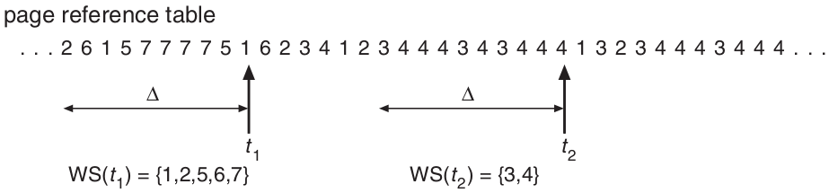
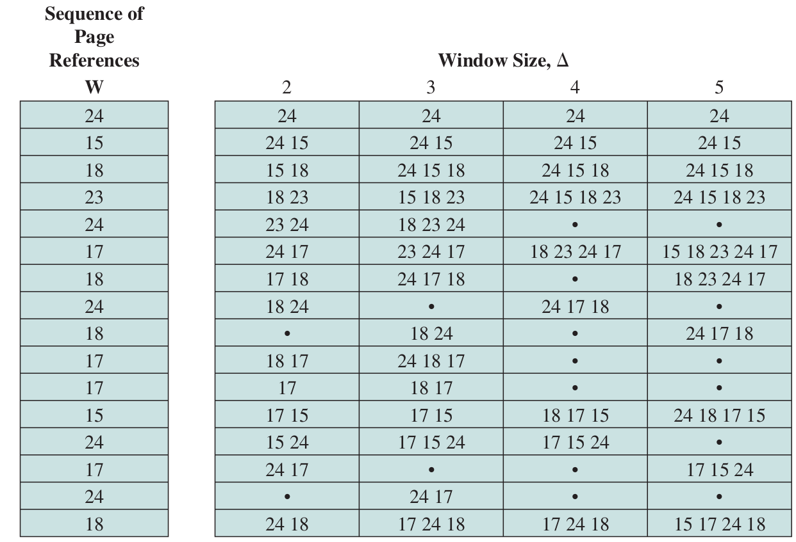
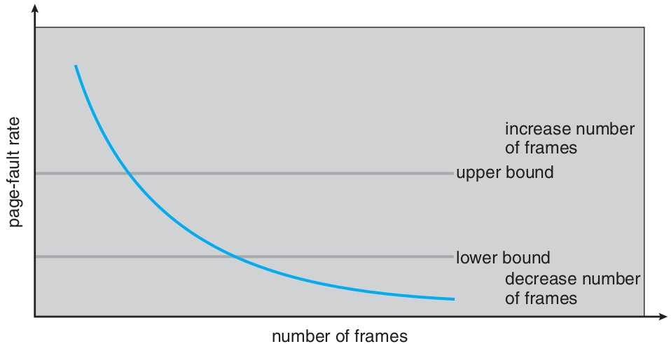
روشهای رویارویی با کوبیدگی پس از شناسایی آن
معلق کردن تعدادی فرآیند برگزیده شده
نپذیرفتن فرآیند جدید
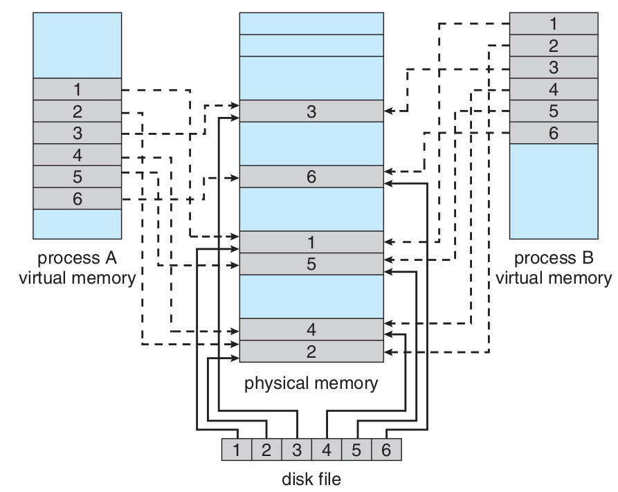
Graphic card
Network
Lock pages
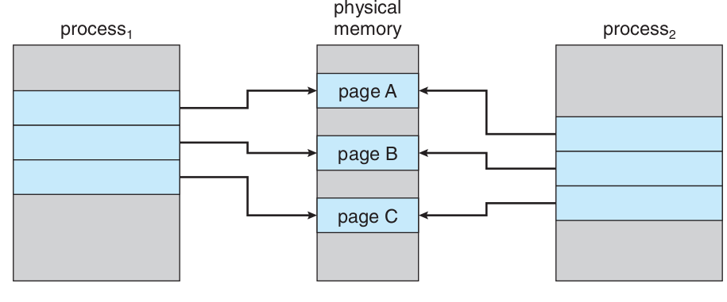
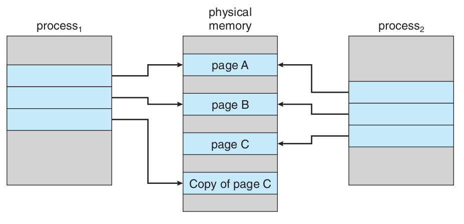
http://blog.cs.miami.edu/burt/2012/10/31/virtual-memory-pages-and-page-frames/
https://www.geeksforgeeks.org/difference-between-internal-and-external-fragmentation/
https://binaryterms.com/contiguous-memory-allocation-in-operating-system.html
https://github.com/mor1/ia-operating-systems/wiki/06-Virtual-Addressing
http://images.bit-tech.net/content_images/2007/11/the_secrets_of_pc_memory_part_1/hei.png
Gemini AI, Chatgpt, duck.ai
https://upload.wikimedia.org/wikipedia/commons/c/c2/Write-back_with_write-allocation.svg
https://www.byclb.com/TR/Tutorials/dsp_advanced/ch1_1_dosyalar/image025.jpg
https://en.wikipedia.org/wiki/File:Cache,hierarchy-example.svg
https://www.cs.princeton.edu/courses/archive/spr11/cos217/lectures/18MemoryMgmt.pdf
https://www.cs.princeton.edu/courses/archive/spr11/cos217/lectures/18MemoryMgmt.pdf
https://www.mvorganizing.org/what-is-principle-of-locality-in-operating-system/
http://www2.cs.uregina.ca/~hamilton/courses/330/notes/memory/page_replacement.html
https://examradar.com/nru-not-recently-used-page-replacement-algorithm-questions-answers/
https://japp.io/algorithms/page-replacement/lfu-page-replacement-algorithm-program-in-c-c/
{kind=link}
{kind=link}
{kind=link}
{kind=link}
{kind=link}